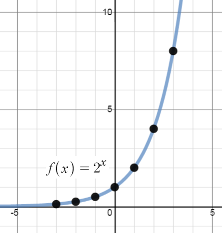
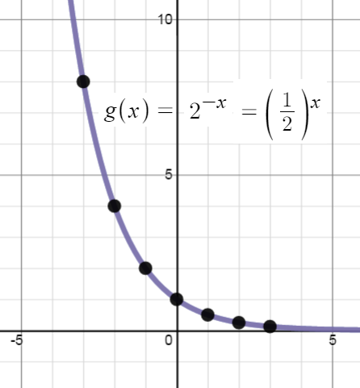
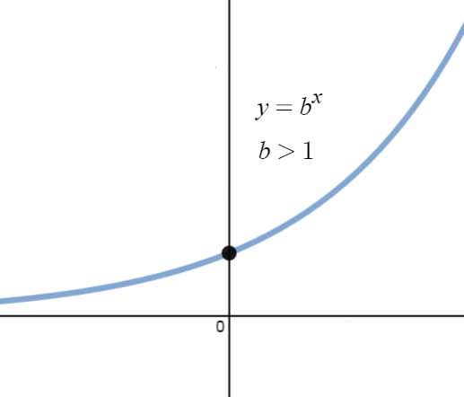
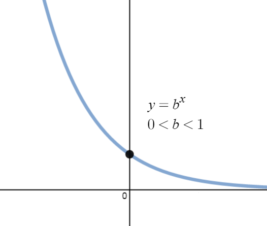
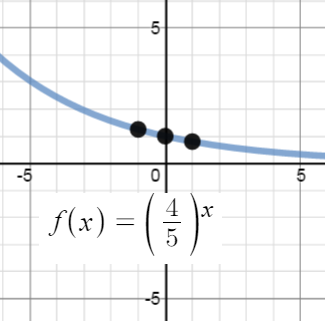
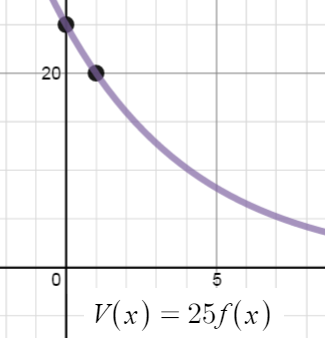
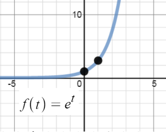
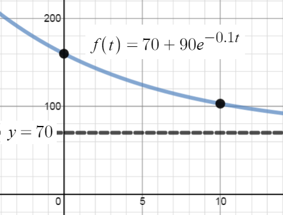
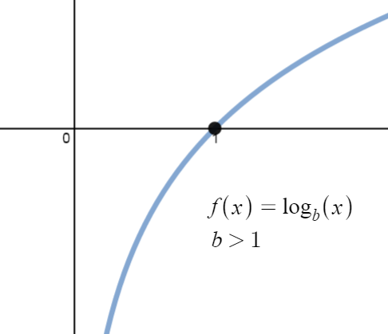
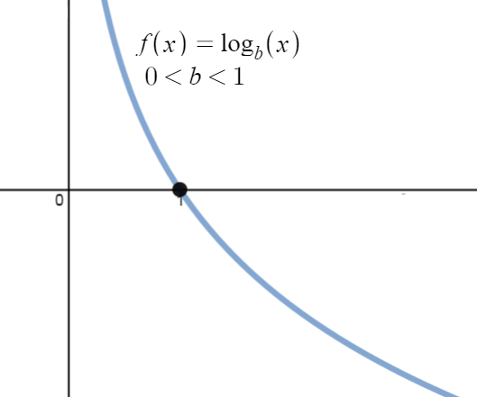

MAT-102: 4A-Exponential and Logarithmic Functions
Objectives:
- Evaluate exponential and logarithmic functions.
- Identify graphs, domains, ranges, and asymptotes of exponential and logarithmic functions.
- Determine the inverse of exponential and logarithmic functions.
- Simplify exponential and logarithmic expressions and identify compositions of exponential and logarithmic functions
\(\S4A.1\) Introduction
Of all of the functions we study in this course, exponential and logarithmic functions are possibly the
ones which impact everyday life the most. This module introduces us to these functions while the
rest of the Unit will more thoroughly explore their properties. Up to this point, we have dealt
with functions which involve terms like $x^2$ or $x^{2/3}$, or powers of $x$. That is functions with terms of the form
$x^p$ where the base of the term, $x$, varies but the exponent of each term, $p$, remains
constant. In this Unit, we study functions of the form $f(x) = b^x$ where the base $b$ is a
constant and the exponent $x$ is the variable.
Example 4A-1: We start our exploration of these functions
with $f(x) = 2^x.$ (Apparently this is a tradition. Every book about Functions we have ever
read starts with $f(x) = 2^x.$) We make a table of values, plot the points and connect the dots.
| $\begin{array}{c|c}
x & f(x) \\ \hline
-3 & 2^{-3} = \frac{1}{8} \\
-2 & 2^{-2} = \frac{1}{4} \\
-1 & 2^{-1} = \frac{1}{2} \\
0 & 2^0 = 1 \\
1 & 2^1 = 2 \\
2 & 2^2 = 4 \\
3 & 2^3 = 8 \\
\end{array}
$ |
 |
A few remarks about the graph of $f(x) = 2^x$ which we have constructed are in order.
First, note that from what we discovered about exponents in module 3C-Radical Functions, any real number may
be an input for $f(x) = 2^x$. Thus, the domain is all real numbers. If we consider
"large" negative values of $x$ like $x = -100$ or $x = -1000,$ the function
$f(x) = 2^x$ takes on values like $f(-100) = 2^{-100} = \frac{1}{2^{100}}$ or
$f(-1000) = 2^{-1000} = \frac{1}{2^{1000}}$. In other words, as $x$ takes on
increasingly "larger" negative values, this is what happens in the function
$$2^x \approx \frac{1}{\mbox{very big positive number}} \approx \mbox{very small positive number}$$
So, $f(x) = 2^x$ is getting very close to zero. This is represented graphically using the
$x$-axis (the line $y = 0$) as a horizontal asymptote. A horizontal asymptote is
a guiding line for the graph. The graph eventually follows along the asymptote.
On the flip side, if we consider large positive values for $x$ , we find $f(100) = 2^{100}$,
$f(1000) = 2^{1000}$, and so on, thus $2^x$ gets larger as we use larger values for $x$.
As a result, our graph suggests the range of $f$ is $(0, \infty)$.
It is important to note that the exponential function's output values do not repeat--for $f(x) = 2^x$, each
value of $x$ produces a unique output. Exponential functions have inverses. We will
consider what an inverse function for an exponential should be after exploring exponential functions further.
\(\S4A.2\) Properties of Exponential Functions
Suppose we wish to study the family of functions $f(x) = b^x.$ Which bases $b$ make sense to study?
We find that we run into difficulty if $b \lt 0$. For example, if $b = -2,$ then the function
$f(x) = (-2)^x$ has trouble, for instance, at $x = \frac{1}{2}$ since $(-2)^{1/2} = \sqrt{-2}$
is not a real number. In general, if $x$ is any rational number with an even denominator, then
$(-2)^x$ is not defined, so we must restrict our attention to bases $b > 0.$ What about $b = 0$?
The function $f(x) = 0^x$ is undefined for $x \le 0$ because we cannot divide by $0$ and $0^0$
cannot be determined. On one hand, it would seem like $0^0$ should be zero, but there is an equally strong argument for $0^0$ being $1$. Since there are two possible outputs, we won't
decide which is better. Instead we say $0^0$ is not defined. For $x > 0$,
$0^x = 0$ so the function $f(x) = 0^x$ is the same as the function $f(x) = 0$ which never
changes. We know everything we can possibly know about this function, so we exclude it from our investigations. The only other base we exclude is $b = 1,$ since the function $f(x) = 1^x = 1$ is, once again, a function with a constant output value. We are now ready for our definition of exponential
functions.
Definition: A function of the form $f(x) = b^x$ where $b$ is a fixed real number,
$b > 0$ and $b \neq 1$ is called a base $b$ exponential function.
We leave it to the reader to verify that if $b > 1,$ then the exponential function $f(x) = b^x$
will share the same basic shape and characteristics as $f(x) = 2^x$.
What if $0 \lt b \lt 1$?
Consider $g(x) = \left(\frac{1}{2}\right)^x$. We could certainly build a table of values and connect
the points, or we could take a step back and note that
$g(x) = \left(\frac{1}{2}\right)^x =(2^{-1})^2 = 2^{-x} = f(-x),$ where $f(x) = 2^x.$ Thinking
back to what we know about transforming graphs, the graph of $f(-x)$ is obtained from
the graph of $f(x)$ by flipping it across the $y$-axis.
| |
Reflect across the $y$-axis
$\longrightarrow$
multiply each $x$-coordinate by $-1$ |
 |
We see that the domain and range of $g$ match that of $f,$ namely $(-\infty,\infty)$ and
$(0,\infty),$ respectively.
Whereas $f$ is always increasing, g is always decreasing. As a result, as $x$ grows in
the negative direction, $g(x)$ takes on larger positive values, and on the
flip side, as $x$ gets larger in the positive direction, $g(x)$ gets closer to zero.
It shouldn't be too surprising that for all choices of the base $0 < b < 1,$ the graph
of $y = b^x$ behaves similarly to the graph of $g.$
We summarize the basic properties of exponential functions below:
Properties of Exponential Functions: Suppose $f(x) = b^x.$
- The domain of f is $(-\infty,\infty)$ and the range of $f$ is $(0,\infty)$.
- $(0, 1)$ is on the graph of $f$ and $y = 0$ is a horizontal asymptote to the graph of $f.$
- $f$ has an inverse and its graph is smooth and unbroken.
If $b>1$
- $f$ is always increasing
- As $x$ takes on "larger" negative values, $f$ gets closer to $0$
- As $x$ takes on larger positive values, $f$ takes larger positive values
- The graph of $f$ looks like:

|
If $b<1$
- $f$ is always decreasing
- As $x$ takes on "larger" negative values, $f$ takes larger positive values
- As $x$ takes on larger positive values, $f$ gets closer to $0$
- The graph of $f$ looks like:

|
The proof of which, like many things discussed in the text, requires Calculus.
Of all of the bases for exponential functions, two occur the most often in scientific circles. The first,
base $10,$ is often called the common base. The second base is an irrational number,
$e \approx 2.718 \dots,$ called the natural base.
For now, it is enough to know that since $e > 1,$ $f(x) = e^x$ is an increasing exponential function.
The following examples give us an idea how these functions are used in the wild.
Example 4A-2:The value of a car can be modeled by
$V(x) = 25 \left(\frac{4}{5}\right)^x,$ where $x \ge 0$ is age of the
car in years and $V(x)$ is the value in thousands of dollars.
- Find and interpret $V(0).$
Solution: To find $V(0),$ we replace $x$ with $0$ to obtain
$$V(0) = 25\left(\frac{4}{5}\right)^0 = 25.$$
Since $x$ represents the age of the car in years, $x = 0$ corresponds to the
car being brand new. Since $V(x)$ is measured in thousands of dollars, $V(0) = 25$
corresponds to a value of $\$25,000.$ Putting it all together, we interpret
$V(0) = 25$ to mean the purchase price of the car was $\$25,000.$
- Sketch the graph of $y = V (x)$ using transformations.
Solution: To graph $y = 25\left(\frac{4}{5}\right)^x,$ we start with the basic
exponential function $f(x) = \left(\frac{4}{5}\right)^x.$ Since the base
$b = \frac{4}{5}$ is between $0$ and $1,$ the graph of $y = f(x)$ is
decreasing. We plot the $y$-intercept $(0, 1)$ and two other points,
$(-1,\frac{5}{4})$ and $(1, \frac{4}{5}),$ and label the horizontal asymptote
$y = 0.$
To obtain $V(x) = 25\left(\frac{4}{5}\right)^x,$ $x \ge 0,$ we multiply the output
from $f$ by $25,$ in other words, $V(x) = 25f(x).$ This results in a vertical stretch by a factor
of $25.$ We multiply all of the $y$ values in the graph by $25$ (including the $y$ value of the
horizontal asymptote) and obtain the points $(-1, \frac{125}{4}),$ $(0, 25)$ and $(1, 20).$
The horizontal asymptote remains $y = 0.$ Finally, we restrict the domain to $[0,\infty)$ to fit
with the applied domain given to us. We have the result below.
|  |
vertical scale by a factor of $25$
$\longrightarrow$
multiply each $y$-coordinate by $25$ |
 |
- Find and interpret the horizontal asymptote of the graph you found.
Solution: We see from the graph of $V$ that its horizontal asymptote is $y = 0.$ (We
leave it to reader to verify this analytically by thinking about what happens as we take
larger and larger powers of $\frac{4}{5}.$) This means as the car gets older, its value
diminishes to $0.$
The function in the previous example is often called a 'decay curve'. Increasing exponential
functions are used to model 'growth curves' and we shall see several different examples of those in
4C. For now, we present another common decay curve which will serve as the basis for
further study of exponential functions. Although it may look more complicated than the
previous example, it is actually just a basic exponential function which has been modified by a few
transformations.
Example 4A-3: According to Newton's Law of Cooling, the temperature of coffee $T$ (in degrees Fahrenheit) $t$ minutes after it is served can be modeled by $T(t) = 70 + 90e^{-0.1t}.$
- Find and interpret $T(0)$.
Solution: To find $T(0),$ we replace every occurrence of the independent variable $t$ with
$0$ to obtain $T(0) = 70 + 90e^{-0.1(0)} = 160.$ This means that the coffee was served
at $160^\circ F.$
- Sketch the graph of $y = T(t)$ using transformations.
Solution: To graph $y = T(t)$ using transformations, we start with the basic
function, $f(t) = e^t.$ As we have already remarked, $e \approx 2.718 \gt 1$ so the graph of $f$ is an increasing exponential with $y$-intercept $(0, 1)$ and horizontal asymptote $y = 0.$ The points $(-1, e^{-1}) \approx (-1, 0.37)$ and $(1, e) \approx (1, 2.72)$ are also on the
graph of $f(t)$. Since the formula $T(t)$ looks rather complicated, we will use the techniques of module 1C-Graphs of Functions to track the changes to the three points $(-1, e^{-1})$, $(0,1)$ and $(-1, e^{-1})$ as well as the horizontal asymptote. We have
$$T(t) = 70 + 90e^{-0.1t} = 90e^{-0.1t} + 70 = 90f(-0.1t) + 70$$
Multiplication of the input to $f$, $t$, by $-0.1$ results in a horizontal expansion by a factor of $10$ as well as a flip about the $y$-axis. Let's see how this affects our three points by evaluating $e^{-0.1t}$ at $t=-10, 0, 10$:
| $(-1, e^{-1})$ |
moves to |
$(10, e^{-1})$
Expand the $-1$ horizontally $10$ left, then flip across the $y$-axis to positive $10$. |
| $(0, 1)$ |
moves to |
$(0, 1)$
The intercept is not affected by this transformation. |
| $(1, e^{1})$ |
moves to |
$(-10, e^{1})$
Expand the $1$ horizontally $10$ right, then flip across the $y$-axis to negative $10$. |
Next, we see that the output from $f$ is being multiplied by $90.$ This results in a vertical stretch
by a factor of $90.$ We multiply the $y$-coordinates by $90$ to obtain:
| $(10, e^{-1})$ |
moves to |
$(10, 90e^{-1})$ |
| $(0, 1)$ |
moves to |
$(0, 90)$
|
| $(-10, e^{1})$ |
moves to |
$(-10, 90e^{1})$ |
We also multiply the $y$ value of the horizontal asymptote $y = 0$
by $90,$ and it remains $y = 0.$ Finally, we add $70$ to all of the $y$-coordinates, which shifts the graph upwards to obtain:
| $(10, 90e^{-1})$ |
moves to |
$(10, 90e^{-1}+70) \approx (10, 103.11)$ |
| $(0, 90)$ |
moves to |
$(0, 90+70)=(0,160)$
|
| $(-10, 90e^{1})$ |
moves to |
$(-10, 90e^{1}+70) \approx (-10, 314.64)$ |
Adding $70$ to the horizontal asymptote shifts it
upwards as well to $y = 70.$
Last but not least, we restrict the domain to match the domain of our applied situation $[0,\infty)$ (we will only consider positive times $t$ after our coffee was served). We connect the first two points above using the same shape in the opposite direction as in the graph of $f$.
The resulting transformed graph is below:
|  |
$\longrightarrow$
|
 |
- Find and interpret the horizontal asymptote of the graph.
Solution: From the graph, we see that the horizontal asymptote is $y = 70.$ It is worth
a moment or two of our time to see how this happens analytically. As $t$ gets larger, we
get $T(t) = 70 + 90e^{-0.1t} \approx 70 + 90e^{\mbox{very big negative}}.$ Since
$e \gt 1,$
$$e^{\mbox{very big negative}} = \frac{1}{e^{\mbox{very big positive}}} \approx
\frac{1}{\mbox{very big positive}} \approx \mbox{very small positive}$$
The larger $t$ becomes, the smaller $e^{-0.1t}$ becomes, so the term
$90e^{-0.1t} \approx \mbox{ very small positive}.$
Hence, $T(t) \approx 70 + \mbox{ very small positive}$ which means the graph is
approaching the horizontal line $y = 70$ from above. This means that as time goes by,
the temperature of the coffee is cooling to $70^\circ F,$ presumably room temperature.
\(\S4A.3\) Logarithms and Their Properties
As we have already remarked, the functions $f(x) = b^x$ all have a unique output for each input.
Thus the exponential functions are invertible. We now turn our attention to these inverses, the
logarithmic functions, which are called 'logs' for short. Recall how inverse functions work:
For $f(x) =2^x$, since $f(3) =2^3 = 8$, then $f^{-1}(x)$ should answer the question:
What exponent do I need on $2$ to get $8$? In this case, $f^{-1}(8) = 3$.
Definition: The inverse of the exponential function $f(x) = b^x$ is called
the base $b$ logarithm function, and is denoted $f^{-1}(x) = \log_b(x).$
We read "$\log_b(x)$" as "log base $b$ of $x.$"
We have special notations for the common base, $b = 10,$ and the natural base, $b = e.$
Definition: The common logarithm of a real number $x$ is $\log_{10}(x)$ and
is usually written $\log(x).$ The natural logarithm of a real number $x$ is $\log_e(x)$ and
is usually written $\ln(x).$
One of the easiest ways to understand logarithms is by comparison with a familiar concept: roots.
Suppose someone asked you: "Exactly what does root mean?" You do understand roots, but they are difficult to define. After a few moments, you might come up with a definition very similar to the "question" definition of logarithms given above. $\sqrt[3]{8}$ means "what number cubed is $8$?"
Now the person asks: "How do you find roots?" Well $\dots$ you just play around with numbers until you find one that works. If someone asks for $\sqrt{25}$, you just have to know that $5^2 = 25$. If someone asks for $\sqrt{30}$, you know that has to be bigger than $5$ and smaller than $6$; if you need more accuracy, it's time for a calculator.
All that information about roots applies in a very analogous way to logarithms.
|
Roots |
Logs |
| The question |
$\sqrt[a]{x}$ means "what number, raised to the $a$ power, is $x$?"
As an equation, $?^a = x$ |
$\log_a x$ means "$a$, raised to what power, is $x$?"
As an equation, $a^? = x$ |
| Example that comes out even |
$\sqrt[3]{8} = 2$ |
$\log_2 8 = 3$ |
| Example that doesn't |
$\sqrt[3]{10}$ is a bit more than $2$ |
$\log_2 10$ is a bit more than $3$ |
| Out of domain example |
$\sqrt{-4}$ does not exist
($x^2$ will never give $-4$) |
$\log_2 (0)$ and $\log_2 (-1)$ do not exist
($2^x$ will never give $0$ or a negative answer) |
For nonnegative numbers, $\sqrt{x}$ can be defined as the inverse function of $x^2$. Recall the definition of an
inverse function: $f ^{-1}(x)$ is defined as the inverse of $f(x)$ if it reverses the inputs and outputs. So we can
demonstrate this inverse relationship as follows:
| $\sqrt{x}$ is the inverse function of $x^2$ |
| $3 \rightarrow x^2 \rightarrow 9$ |
| $9 \rightarrow \sqrt{x} \rightarrow 3$ |
Similarly, $\log_2 x$ is the inverse function of the exponential function $2^x$.
| $\log_2 x$ is the inverse function of $2^x$ |
| $3 \rightarrow 2^x \rightarrow 8$ |
| $8 \rightarrow \log_2 x \rightarrow 3$ |
Since logs are defined as the inverses of exponential functions, we can use use what we know
about inverses to tell us about the graphs of logarithmic functions. For example, we know that the domain of
a log function is the range of an exponential function, namely $(0,\infty),$ and that the range of a log
function is the domain of an exponential function, namely $(-\infty,\infty).$ Since we know the basic
shapes of $y = f(x) = b^x$ for the different cases of $b,$ we can obtain the graph of
$y = f^{-1}(x) = \log_b(x)$ by flipping the graph of $f$ across the line $y = x$ as shown below.
The $y$-intercept $(0, 1)$ on the graph of $f$ corresponds to an $x$-intercept of $(1, 0)$ on
the graph of $f^{-1}.$ The horizontal asymptotes $y = 0$ on the graphs of the exponential functions
become vertical asymptotes $x = 0$ on the log graphs.
We summarize the basic properties of logarithmic functions below, all of which come from
the fact that they are inverses of exponential functions.
Properties of Logarithmic Functions: Suppose $f(x) = \log_b(x).$
- The domain of $f$ is $(0, \infty)$ and the range of $f$ is $(-\infty, \infty).$
- $(1, 0)$ is on the graph of $f$ and $x = 0$ is a vertical asymptote of the graph of $f.$
- $f$ is has a unique output for each input, continuous and smooth.
- $b^a = c$ if and only if $\log_b(c) = a.$ That is, $\log_b(c)$ is the exponent you put
on $b$ to obtain $c.$ $\log_b(b^x) = x$ for all $x$ and $b^{\log_b(x)} = x$ for all $x \gt 0$ and $\ln(e^x)=x$.
If $b>1$
- $f$ is always increasing
- As $x$ gets closer to zero from the right, $f$ takes larger negative values
- As $x$ takes on larger positive values, $f$ gets larger
- The graph of $f$ looks like:

|
If $0 \lt b \lt 1$
- $f$ is always decreasing
- As $x$ gets closer to zero from the right, $f$ takes larger positive values
- As $x$ takes on larger positive values, $f$ takes larger negative values
- The graph of $f$ looks like:

|
It is worth the reader's time to understand logarithm properties from an exponential perspective.
For instance, we know that the domain of $g(x) = \log_2(x)$ is $(0, \infty).$ Why? Because the range of
$f(x) = 2^x$ is $(0, \infty).$ In a way, the idea of "reversing" the exponential function says everything, but
at the same time, it doesn't. For example,
if we try to find $\log_2(-1),$ we are trying to find the exponent we put on $2$ to give us $-1.$
In other words, we are looking for $x$ that satisfies $2^x = -1.$ There is no such real number,
since all powers of $2$ are positive. While what we have said is exactly the same thing as saying
'the domain of $g(x) = \log_2(x)$ is $(0, \infty)$ because the range of $f(x) = 2^x$ is $(0,\infty)$,
we feel it is in a student's best interest to understand the properties of logarithms at this level
instead of just merely memorizing the facts.
On a procedural level, logs undo the exponentials. Consider the function $f(x) = 2^x.$ When we
evaluate $f(3) = 2^3 = 8,$ the input 3 becomes the exponent on the base $2$ to produce the real
number $8.$ The function $f^{-1}(x) = \log_2(x)$ then takes the number $8$ as its input and
returns the exponent $3$ as its output. In symbols, $\log_2(8) = 3.$ More generally,
$\log_2(x)$ is the exponent you put on $2$ to get $x.$ Thus, $\log_2(16) = 4,$ because
$2^4 = 16.$
Example 4A-4: Simplify the following.
- $\log_3(81)$
Solution: The number $\log_3(81)$ is the exponent we put on $3$ to get $81.$ As such,
we want to write $81$ as a power of $3.$ We find $81 = 3^4,$ so that $\log_3(81) = 4.$
- $\log_2\left(\frac{1}{8}\right)$
Solution: To find $\log_2(\frac{1}{8}),$ we need rewrite $\frac{1}{8}$ as a power of $2.$
We find $\frac{1}{8} = \frac{1}{2^3} = 2^{-3},$ so $\log_2\left(\frac{1}{8}\right) = -3.$
- $\ln (\sqrt[3]{e^2})$
Solution: First, recall that the notation $\ln\left(\sqrt[3]{e^2}\right)$ means
$\log_e\left(\sqrt[3]{e^2}\right),$ so we are looking for the exponent to put on $e$
to obtain $\sqrt[3]{e^2}.$ Rewriting $\sqrt[3]{e^2} = e^{2/3},$ we find
$\ln\left(\sqrt[3]{e^2}\right) = \ln\left(e^{2/3}\right) = \frac{2}{3}.$
- $\log(0.001)$
Solution: Rewriting $\log(0.001)$ as $\log_{10}(0.001),$ we see that we need to write
$0.001$ as a power of $10.$ We have $0.001 = \frac{1}{1000} = \frac{1}{10^3} = 10^{-3}.$
Hence, $\log(0.001) = \log(10^{-3}) = -3.$
- $2^{\log_2(8)}$
Solution: We can use the idea of inverse functions directly to simplify $2^{\log_2(8)} = 8.$ We can
also understand this problem by first finding $\log_2(8).$ By definition, $\log_2(8)$ is the exponent
we put on $2$ to get $8.$ Since $8 = 2^3,$ we have $\log_2(8) = 3.$ We now substitute to find
$2^{\log_2(8)} = 2^3 = 8.$
- $\ln(0)$
Solution: Here we are asked "What exponent, $x$, is needed on $e$ so that $e^x=0$?" Well, there is no
number we can raise $e$ to that gives $0$. Note that $e^0=1$ and recall the graph of $y= e^x$ is
always above the $x$-axis. In this case, there is no number that works.
- $\log(-100)$
Solution: Like the last example, there is no number that works. Tthere is no exponent $x$ for which $10^x$ gives
a negative number. Recall that the domain of $f(x) = \log(x)$ consists
only of positive numbers, so we cannot take the logarithm of a negative number.
Rewriting Logarithm Equations as Exponent Equations
Being able to convert back and forth between log and exponential forms can come in handy
when solving equations in the next section. We practice this technique next by comparing the
process to working equations with roots. Both root equations and logarithm equations can be rewritten
as exponent equations.
$\sqrt{9} = 3$ can be
rewritten as $3^2 = 9$. These two equations are the same statement about numbers, written in two different ways.
$\sqrt{9}$ asks the question "What number squared is $9$?" So the equation $\sqrt{9} = 3$ asks this question,
and then answers it: "$3$ squared is $9$."
We can rewrite logarithm equations in a similar way. Consider this equation:
$$\log_3 \left(\frac{1}{3}\right) = -1$$
If you are asked to rewrite that logarithm equation as an exponent equation, think about it this way. The left side
asks: "$3$ to what power is $\frac{1}{3}$?" And the right side answers: "$3$ to the $-1$ power is $\frac{1}{3}$."
$3^{-1} = \frac{1}{3}$.
These two equations, $\log_3 \left(\frac{1}{3}\right) = -1$ and $3^{-1} = \frac{1}{3}$ , are two different ways
of expressing the same numerical relationship.
Example 4A-5: Rewrite the logarithm equation as an exponential equation.
- $10^2 = 100$
Logarithm form: $\log(100) = 2$
- $e^{2x} = 5$
Logarithm form: $\ln(5) = 2x$
- $10^{x+1} = 0.001$
Logarithm form: $\log(0.001) = x+1$
Example 4A-6: Rewrite the exponential equation as a logarithm equation.
- $\ln(1) = 0$
Exponential form: $e^0 = 1$
- $\log(2x) = 18$
Exponential form: $2x = 10^{18}$
- $\ln(x-3) = 2.4$
Exponential form: $e^{2.4} = x - 3$
Up until this point, restrictions on the domains of functions came from avoiding division by zero
and keeping negative numbers from beneath even radicals. With the introduction of logs, we now
have another restriction. Since the domain of $f(x) = \log_b(x)$ is $(0,\infty),$ the
argument of the log must be strictly positive.
Example 4A-7: Find the domain of $f(x) = 2 \log(3 - x) - 1$ and then find its inverse function.
- To find the DOMAIN:
The main issue is that $3 - x$ must be a positive number:
| $3 -x \gt 0$ |
Subtract $3$ from both sides |
| $-x \gt -3$ |
Multiply both sides by $-1$ and remember to reverse the inequality |
| $x \lt 3$ |
Hence the domain of $f$ is $(-\infty,3)$. |
- To find the INVERSE function:
| $y = 2 \log(3 - x) - 1$ |
Switch the variables |
| $x = 2 \log(3 - y) - 1$ |
Add $1$ to both sides |
| $x +1 = 2 \log(3 - y)$ |
Divide by $2$ |
| $\dfrac{x +1}{2} = \log(3 - y)$ |
Rewrite the log in its equivalent exponential form |
| $10^{(x +1)/2} = 3 - y$ |
Now, subtract 3 from both sides |
| $-3 + 10^{(x +1)/2} = -y$ |
Multiply both sides by $-1$ |
| $3 - 10^{(x +1)/2} = y$ |
|
The inverse is $f^{-1}(x) = 3 - 10^{(x +1)/2}$.
Example 4A-8: Find the domain of $g(x) = e^{x-1}-3$and then find its inverse function.
- To find the DOMAIN:
it's the same as that of $e^x$ which is $(-\infty, \infty).$
- To find the INVERSE function:
| $y = e^{x-1}-3$ |
Switch the variables |
| $x = e^{y-1}-3$ |
Add $3$ to both sides |
| $x +3 = e^{y-1}$ |
Rewrite the exponential in log form |
| $\ln(x+3) = y - 1$ |
Add $1$ to both sides |
| $\ln(x+3) + 1 = y$ |
|
The inverse is $g^{-1}(x) = \ln(x+3) + 1$.
Finally, let's practice taking apart composition of functions with
exponential and logarithm functions.
Example 4A-9: Find functions $f(t)$ and $g(t)$ so that $h(t) = (f \circ g)(t)$.
- $h(t) = \ln(1- 2t) + 4$
Solution: If $f(t) = \ln(t) + 4$ and $g(t) = 1 - 2t$,
then $f(g(t)) = \ln(g(t)) + 4 = \ln(1-2t) + 4 = h(t).$
- $h(t) = \dfrac{1}{e^t-1}$
Solution: There are several possible choices. If $f_1(t) = \dfrac{1}{t - 1}$ and $g_1(t) = e^t$,
then $f_1(g_1(t)) = \dfrac{1}{g_1(t)-1} = \dfrac{1}{e^t-1} = h(t).$ Another choice could be,
$f_2(t) = \dfrac{1}{t}$ and $g_2(t) = e^t -1$,
then $f_2(g_2(t)) = \dfrac{1}{g_2(t)} = \dfrac{1}{e^t-1} = h(t).$